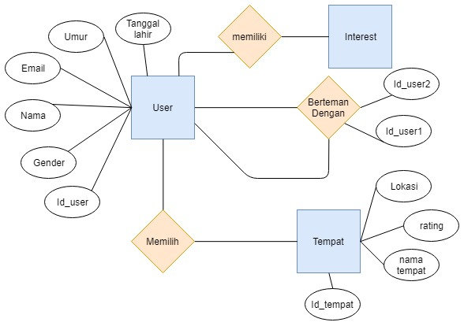

Kongkow adalah sebuah aplikasi yang memfasilitasi pengguna untuk mencari teman untuk pergi nongkrong. Terkadang kita ingin sekali pergi untuk hangout tetapi teman-teman kita memiliki kesibukan masing-masing. Dengan aplikasi Kongkow ini kita dapat mencari teman yang akan kita ajak untuk nongkrong bareng. Kita bisa mencari teman yang sesuai dengan kriteria yang kita inginkan dan kita pula dapat menentukan tempat yang akan kita tuju. Jika menemukan kriteria yang sesuai, kita dapat mengajaknya untuk nongkrong apakah mau atau tidak. Dalam aplikasi ini juga tersedia data-data tempat nongkrong disekitar anda.
Rancangan aplikasi ini dibuat dengan tujuan memfasilitasi pengguna agar lebih mudah dalam melakukan pencarian teman untuk nongkrong. Dalam aplikasi yang akan kami buat ini, kami memiliki target user untuk kalangan remaja sampai dewasa.
1. proses mencari teman
Data user mencakup :- Gender user (P/W)
- Umur user
- Hobby user, bisa lebih dari 1
- Interest user, bisa lebih dari 1
2. Proses mencari tempat
Data tempat mencakup :- jenis tempat missal : (café, … )
- nama tempat
- lokasi tempat (koordinat di google maps)
- rating tempat oleh user
- foto tempat ditambahkan oleh admin
- deskripsi tempat
- daftar tempat yang tersedia, dan recommended, yang sudah ter-verifikasi
Cara mengumpulkan data :
- Observasi : mengamati kebiasaan anak muda yang suka nongkrong
- Interview : mewawancarai anak muda yang sering nongkrong dan bagaimana cara mereka mengajak temannya untuk nongkrong yang akan kami jadikan fitur untuk mempermudah user
Relasi antar data :
- Primary user pada sistem pencarian teman hangout adalah user yang ingin mencari teman untuk hangout ke café.
- -Atribut Fisik Usia Remaja sampai Dewasa. Alasannya karena kami menganggap saat remaja,user sudah dapat membedakan mana yang baik dan mana yang buruk, ini juga agar mencegah hal-hal yang tidak diinginkan seperti penculikan, penipuan dll. Gender : Laki-laki dan perempuan Salah satu tujuan hangout di café yaitu untuk mengenal lebih jauh, atau hanya ngobrol dengan orang lain, jadi tidak memandang jenis kelamin.
- - Kemampuan perseptual Kemampuan perseptual user aplikasi kami diharuskan memiliki kemampuan visual yang baik, karena system kami melakukan interaksi dengan user menggunakan visual. Kemampuan kognitif Kemampuan kognitif yang perlu dimiliki user kami yaitu dapat membaca. Karena dalam aplikasi kami ada pilihan-pilihan (seperti interest) yang dapat dipilih dan informasi-informasi pribadi yang harus diisi.
- - Kemampuan bersosialisasi Kemampuan bersosisalisasi user yang kami harapkan yaitu user dapat bersosialisasi atau ingin bersosialisasi dengan baik. Karena hangout merupakan aktifitas sosial, maka kami harap user dapat bersosialisasi dengan baik.
- Secondary user pada sitem pencarian teman hangout kami adalah user yang juga memakai aplikasi kami untuk mencari teman hangout. Karena penerima output dari sistem kami adalah user juga.
- Tertiary user pada sistem kami adalah pemilik caffee, karena pemilik caffee akan diuntungkan dengan adanya user kami yang hangout di caffee mereka.
1. Lingkungan Fisik
Tempat akses : Proses pencarian teman melalui aplikasi dapat dilakukan kapanpun dan dimanapun. Tingkat pencahayaan : Karena user dapat menggunakan aplikasi kapanpun dan dimanapun, tingkat pencahayaan disesuaikan dengan lingkungan tempat user mengakses aplikasi.
Sikap badan user saat mengakses aplikasi : User dapat menggunakan aplikasi pada saat posisi duduk, berdiri ataupun tiduran. Ketersediaan sumber energi : Karena aplikasi dibuat berbasis mobile, maka user diharuskan memiliki baterai yang cukup untuk dapat menghidupkan smartphone-nya.2. Lingkungan Teknis
Sistem yang akan dirancang menggunakan platform mobile. Hal ini dibuat karena target end user aplikasi pencarian teman hangout adalah remaja. Remaja biasanya menginginkan aplikasi yang simpel, praktis dan dapat diakses dimana saja dan kapan saja. Mobile adalah pilihan yang tepat karena dilihat dari kebiasaan anak remaja masa kini yang tidak bisa terlepas dari smartphone. Untuk mengakses aplikasi, user tinggal menekan icon aplikasi yang sudah ada di layar smartphone mereka.
Agar user dapat menggunakan sistem ini dimana pun dan kapan pun.
Jaringan : Untuk melakukan pencarian teman hangout, user harus tersambung dengan internet.3. Lingkungan Sosial
User dapat berinteraksi dengan sistem yaitu user memberikan inputan yang dibutuhkan sistem sekaligus penerima output dari sistem. Pertama, user membuka aplikasi kongkow. Sehingga sistem menampilkan tampilan utama yang berisi logo, deskripsi, form login(email dan password), register, dan forgot password. Untuk proses login, user mengisi form login(menginputkan email/username dan password) atau juga dapat login via Sosial Media(Facebook, Twitter, Instagram). Sehingga sistem dapat mengeluarkan output, seperti berupa validasi data login, jika sudah di validasi dan datanya cocok maka sistem menampilkan menu utama yang terdiri dari list chat, cari teman, profile. Jika user belum mengisi profil dengan lengkap, user harus mengisi dahulu seperti nama, email, tanggal lahir, jenis kelamin, alamat, dan hobby/interest. Jika user belum memiliki akun maka sistem akan menampilkan email tidak terdaftar. Untuk proses pencarian teman, user diharuskan menekan tab cari teman. Kemudian sistem akan menampilkan 2 pilihan, menampilkan orang-orang yang berada di sekitar user yang sedang mencari teman nongkrong dengan ketentuan user lain nya atau juga user yang membuat ketentuan jam dan tempatnya. Sistem juga bisa melakukan filtering dari pencarian teman yang akan user ajak nongkrong dari jenis kelamin, usia, hobby/interest, tempat atau jam nongkrong, dsb. User akan memberi input lagi kepada sistem apabila sudah menemukan teman yang dirasa cocok(menggunakan pilihan 1), user dapat mengirimkan permintaan kepada orang tersebut. Kemudian sistem akan memberi notifikasi kepada user yang diajak dengan melakukan pengiriman permintaan kepada orang yang ingin nongkrong tersebut. Jika orang tersebut menerima, maka user dan orang tersebut bisa chat sebelum hangout. Jika ditolak maka penawaran ingin nongkrong dari orang tersebut dianggap sudah selesai.
| No. | Aktor | No. | Sistem |
|---|---|---|---|
| 1 | User membuka aplikasi kongkow | 2 | Sistem menampilkan tampilan utama yang berisi logo,deskripsi,form login(email dan password), register, dan forgot password |
| 3 | User mengisi form login (email/username dan password) atau juga dapat login via Sosial Media(Facebook, Twitter, Instagram). | 4 | Sistem melakukan validasi data login, jika sudah di validasi dan datanya cocok maka sistem menampilkan menu utama yang terdiri dari list chat,cari teman, profile. Jika user belum mengisi profil dengan lengkap, user harus mengisi dahulu seperti nama, email, tanggal lahir, jenis kelamin, alamat, dan hobby/interest. |
| 5 | User melakukan pencarian teman dengan menekan tab cari teman | 6 | Sistem menampilkan 2 pilihan, menampilkan orang-orang yang berada di sekitar kita yang sedang mencari teman nongkrong dengan ketentuan mereka atau juga kita yang membuat ketentuan jam dan tempatnya. Sistem juga bisa melakukan filtering dari pencarian teman yang akan kita ajak nongkrong dari jenis kelamin, usia, hobby/interest, tempat atau jam nongkrong,dsb/td> |
| 7 | Jika User sudah menemukan teman yang cocok(menggunakan pilihan 1), user dapat mengirimkan permintaan kepada orang tersebut. | 8 | Sistem melakukan pengiriman permintaan kepada orang yang ingin nongkrong tersebut. Jika orang tersebut menerima, maka user dan orang tersebut bisa chat sebelum hangout. Jika ditolak maka penawaran ingin nongkrong dari orang tersebut dianggap sudah selesai. |

Analisis Sistem Saat ini :
A. Dalam proses analisis system saat ini, tidak ditemukan user yang sudah memakai aplikasi yang khusus untuk mencari teman hangout. Kebanyakan user memakai aplikasi chat biasa untuk mengajak teman untuk hangout. Hal ini disebabkan karena user merasa masih belum memiliki keinginan dengan teman yang baru dan belum dikenal sama sekali dan dikhawatirkan banyak orang-orang yang memiliki identitas palsu. Mungkin untuk referensi mencari teman yang bersifat random kita bisa memakai aplikasi referensi yaitu secret, Tinder, Scout,dll.
Kelebihan :
• Kita mendapat teman baru
Kekurangan :
• Kita tidak mengenalnya sama sekali, bisa jadi orang yang berniat jahat
• Sering ditemukannya akun-akun palsu.
• Canggung untuk ngobrol dengan orang yang belum dikenal.
B. Untuk system yang bersifat manual, user biasanya mengajak langsung kepada teman dekatnya. Biasanya user mengajak via chat atau ngobrol langsung.
Kelebihan :
• Kita sudah mengenal teman yang akan diajak hangout.
• Lebih nyaman untuk hangout, tau apa yang akan dibicarakan.
• Lebih Safety.
Kekurangan :
• Terkadang teman memiliki waktu kosong yang tidak sama dengan kita.
• Membatalkan secara tiba-tiba.
Analisis Pengembangan Data
Dari hasil wawancara yang sudah kami lakukan, kami menganalisis bahwa ada banyak hal yang sangat bermanfaat bagi pengembangan aplikasi kami selanjutnya. Hal-hal tersebut adalah :• User memiliki tingkat kekhawatiran yang cukup tinggi dengan orang-orang yang tidak dikenal dan bisa jadi memakai identitas palsu. Maka untuk itu user memberi masukan juga untuk menambah deskripsi profil setiap user. User dapat melakukan sinkronisasi data dari Instagram, Facebook, Google, dll. Semakin banyak data yang di sinkronisasi semakin tinggi pula kepercayaan user kepadanya.
• User dapat menambahkan interest atau hobby yang sama dalam melakukan pencarian terhadap teman nongkrong. Hal ini agar antar user pada saat nongkrong memiliki obrolan yang lebih luas.
• Adanya system point atau insentif pada saat kita melakukan pertemuan agar lebih menarik user memakai aplikasi tersebut.
• Adanya rekomendasi tempat yang biasa dipakai untuk nongkrong, bisa juga aplikasi bekerja sama dengan tempat-tempat nongkrong, agar user yang memilih tempat tersebut untuk nongkrong bisa mendapat diskon,dsb.
- Wawancara User(Rida Setiana Fitri)
- Mengerjakan tentang Deskripsi ringkas karakteristik utama dari user pengguna sistem
- Mengerjakan tentang Identifikasi Permasalahan
- Mengelola Anggota
- Mengerjakan Analysis Task
- Wawancara user(Nadila, Assyifa,Rangga)
- Mengerjakan Identifikasi Permasalahan
- Melakukan Analisis Sistem saat ini
- Wawancara User(Hera,Luthfiah,Rifanni)
- Mengerjakan analysis Lingkungan teknis dan sosial terkait dengan rancangan
- Wawancara User(antisaputr)
- Memperbaiki konten Web
- Mengerjakan analisis sistem saat ini
- Mengerjakan deskripsi ringkas tentang data yang dibutuhkan dan bagaimana mengumpulkannya
1. Ariq Suryo Hadi(161524002)
2. Delta Rahmat Fajar D(161524007)
3. Evy Bestari Putri(161524009)
4. Pradika Fitra Pratama(161524027)
| No | Fakta | Implikasi |
|---|---|---|
| 1 | Usia 15 - 60 tahun |
|
| 2 | User multibahasa | Bahasa yang ada di konten hanya sebagian besar menggunakan bahasa indonesia namun tidak menutup kemungkinan ada bahasa inggris |
| 3 | User anak muda,remaja, hingga dewasa | Sistem dapat di gunakan oleh pengguna 24 jam dalam 7 hari |
| 4 | User adalah orang yang ingin praktis | Sistem dapat di gunakan dimana saja seperti di kantor, di rumah, dll. |